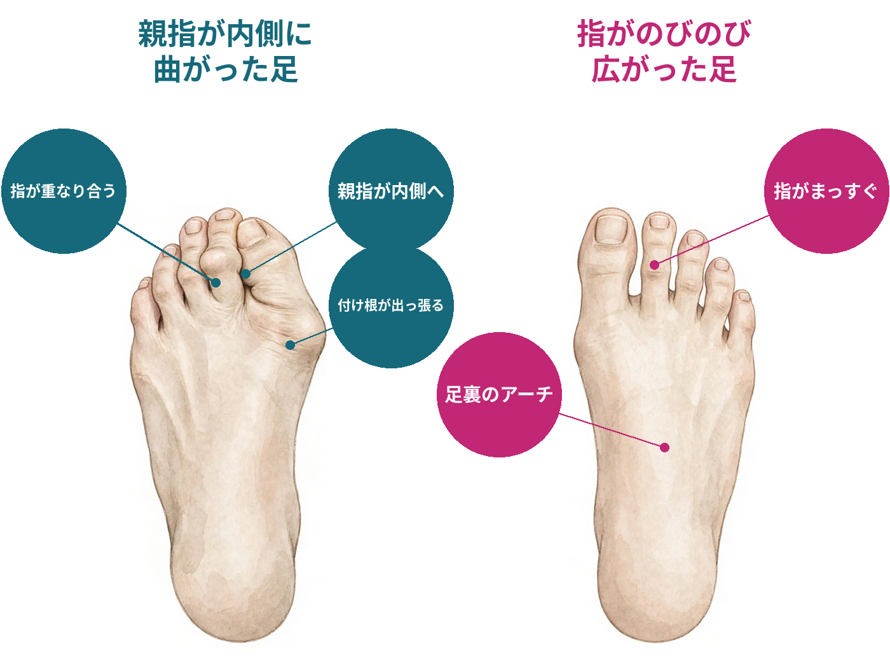

外反母趾・足指の疲れ
美容整体ステラ・ポラリス東三国｜大阪市淀川区東三国・東三国駅徒歩5分・女性向け

窮屈な足指をのびのびと、足元から姿勢の土台づくり
親指の付け根が出っ張って靴に当たる、夕方になると足指が疲れて窮屈——外反母趾や足指の疲れは、靴の影響だけでなく、足指の使い方や歩き方とも関わります。足は体全体を支える土台で、足指が使えていないと、姿勢や脚のラインにも影響が広がります。このページでは、足指に負担が集まる仕組みと、足元から整えることを目指す当サロンでのケア、ご自宅でできるセルフケアをご案内します。外反母趾は、見た目の変化だけでなく、歩き方や靴選びにも影響する悩みです。足指が本来の働きを取り戻すことは、足全体の疲れにくさにもつながります。
ご予約はこちら（Coubic）こんなお悩みありませんか
- 親指の付け根が出っ張って、靴に当たる
- 夕方になると、足指や足裏が疲れてだるい
- 足の指を広げる動きが、しにくい
- ヒールや先の細い靴を履く機会が多い
- 足指が重なり合って、窮屈な感じがする
- 歩くと、足の外側や小指側に体重がかかる気がする
- 脚のむくみや冷えも、セットで気になっている
当てはまる項目が多いほど、足指の使い方の偏りと靴の影響が積み重なっている目安とされています。足指は小さな部位ですが、体全体の土台です。次のセルフチェックで、足指の広がり具合の傾向を確かめてみましょう。足指の状態は、靴を脱いだときにしか確認できません。入浴のときに足指の開き具合を見る習慣を持つと、変化に気づけます。
簡単セルフチェック（足指の広がりチェック）
座ったまま、足指の動きを確かめる簡単な方法です。
- 椅子に座り、素足で足指をパーの形に広げてみます。
- 次に、足指でグーをつくるように曲げます。
- 指が広がらない、親指が内側に寄ったまま戻りにくい場合は、足指まわりの筋肉が固まっている目安と言われています。
※これは診断ではありません。ご自身の状態の傾向を知る目安としてお使いください。
外反母趾・足指の疲れの原因と仕組み
親指の角度が変わる仕組み
外反母趾は、足の親指が小指側へ曲がり、付け根の骨が内側に出っ張った状態を指します。先の細い靴による圧迫に加え、足裏のアーチの崩れや、足指を使う力の低下が重なって進みやすいと言われています。図1のように、指の向きひとつで、足元の安定感は変わります。

図1 足指の向きとアーチの関係、指がのびのび広がった状態のイメージ。体の状態には個人差があります。
足裏のアーチの役割
足裏には、体重を支え、歩くときの衝撃を受け止めるアーチがあります。アーチが崩れると体重のかかり方が偏り、親指の付け根への負担が増えます。足指を動かすことは、アーチを支える筋肉を使うことにもつながります。歩くたびに足指で地面をつかむ動きは、姿勢の安定にも関わります。指が使えない歩き方は、ふくらはぎや腰の疲れにもつながりやすいものです。
足元から広がる影響
足は体の一番下の土台です。足指が使えていないと、歩くときの蹴り出しが弱くなり、ふくらはぎや太ももの使い方まで偏ります。足元の疲れが脚全体の重さにつながるのは、そのためです。土台から整える視点が、姿勢づくりにも関わります。ふくらはぎの張りが強いと、足裏への体重のかかり方も偏りがちです。足とふくらはぎはセットでケアするのがおすすめです。
靴と生活の見直し
毎日の靴は、足指の状態に大きく影響します。指先に余裕のある靴を選ぶことや、家の中では素足で足指を動かす時間を持つことが、負担を減らす基本です。ケアと生活の見直しを組み合わせることが大切です。
セルフケアで足りる場合・サロンケアが向く場合
足指の疲れが軽く、足指の体操をしたあとに足元が軽く感じる日が多い場合は、まずご自宅でのセルフケアと靴の見直しを続けて様子を見る方法があります。一方で、足指まわりが固く自分ではほぐしにくい、脚全体のむくみや重さも重なっている、足元から姿勢を整えたいという場合は、サロンでのケアが向いている目安になります。サロンでは、足裏から脚全体をゆるめ、施術後に「足元が軽い」「指が広がる感じがする」と感じやすい状態を目指します。なお、痛みが強い場合は医療機関への相談を優先してください。施術では、足裏からふくらはぎ、脚全体の張りを一緒に確認しながら進めます。
当サロンでのケア
当サロンの足指ケアは、「足裏のアーチと足指の動きを取り戻し、足元の土台を整える」ことを目指す組み立てです。まず足指の状態と脚全体の使い方を一緒に確認し、部位と目的に合わせて3つの手技を組み合わせます。
美容整体：骨盤の傾きと脚の軸を整え、足元への体重のかかり方の偏りを減らす土台をつくることを目的に進めます。
アロマオイルマッサージ：足裏からふくらはぎをオイルでゆるめ、巡りが流れやすい状態を目指します。足指の付け根まで丁寧にほぐします。
もみほぐし：固まりやすい足裏や足指の付け根をほぐし、指の動きを引き出すことを目的に進めます。
ケアを通して目指すのは、こんな変化です。
- 足指が広がりやすく、足元が安定する感覚へ
- 足裏のアーチが支えられ、歩く姿が軽やかな感覚へ
- 夕方の足の疲れが軽く感じる状態へ
- 脚全体の巡りが流れやすく、むくみが軽い印象へ
- 足指の体操の続け方を知り、日常で土台を保ちやすい状態へ
施術の仕上げには、足指の体操の続け方や、靴選びのポイントもお伝えします。足元は毎日体を支える土台です。小さな体操の積み重ねが、歩きやすさを支えます。足は体を支える土台です。土台をいたわることが、全身の軽さにつながります。

施術の流れ
ご来店後、気になる部位やお悩み、ご希望の強さなどをうかがいます。完全個室のため、周りを気にせずお話しいただけます。
足指の状態や足裏のアーチ、脚全体の使い方などを一緒に確認し、その日の状態に合わせた施術の進め方をご案内します。
美容整体を中心に、ご希望に応じてアロマオイルマッサージ、もみほぐしを組み合わせて進めます。強さは途中でも調整できます。
施術後の状態を確認し、ご自宅で続けやすいセルフケアのポイントをお伝えします。次回の目安についても、ご希望があればご案内します。
料金
| コース | 通常価格 | キャンペーン価格（12/25まで） |
|---|---|---|
| 80分 | 8,000円 | 3,000円 |
| 100分 | 10,000円 | 4,000円 |
| 120分 | 12,000円 | 5,000円 |
クリスマスキャンペーンは12月25日まで、ご新規様もリピーターの方も対象です。施術内容は当日の状態とご希望に合わせて組み立てます。
ご自宅でできるセルフケア
- 足指グーパー体操：足の指をグー・パーと大きく動かします。20回を目安に、お風呂上がりに行うと習慣にしやすくなります。
- タオル引き寄せ：床にタオルを敷き、足指で手前に引き寄せます。左右各5回、アーチを支える筋肉を使う体操です。
- 足裏ほぐし：テニスボールなどを足裏で転がし、土踏まずを中心にほぐします。左右1分ずつ、体重のかけすぎに注意してください。
- 指の間を広げる：手の指を足の指の間に入れて、やさしく広げながら足首を回します。左右各10回が目安です。
ご自宅でのケアに：セルフケア資料ライブラリ（無料）
このお悩みに合わせたセルフケアの考え方を、無料の資料ライブラリでご紹介しています。
セルフケア資料ライブラリを開く →
受診の目安
親指の付け根の痛みが強い場合や、赤く腫れている場合、歩くのがつらいほどの痛みがある場合は、施術の前に医療機関への受診をおすすめします。当サロンのケアは足元のケアに関するもので、診察に代わるものではありません。気になる症状があるときは、まず医療機関でご相談ください。
よくある質問
Q. 初めてでも大丈夫ですか？
はい。当サロンは完全予約制・完全個室で、1日3組までのご案内です。最初にカウンセリングで足指の状態や気になる部位をうかがい、無理のない内容から始めます。施術の前後で「足元が軽くなった」「指が広がる感じがする」といった感覚の違いを一緒に確認しながら進めますので、初めての方も安心してご利用いただけます。
Q. 施術は痛いですか？
強さは、ご希望をうかがいながら調整します。足裏は感じやすい部位のため、心地よいと感じる圧を基本に進めます。感じ方には個人差がありますので、施術中も遠慮なくお声がけください。
Q. コースはどう選べばいいですか？
80分・100分・120分のコースがあり、ケアしたい部位の広さやお時間のご都合に合わせて選べます。足元から脚全体、骨盤までゆっくり整えたい方には、100分が選ばれることが多いコースです。迷われる場合は、ご予約の際にお気軽にご相談ください。
Q. 場所と予約方法を教えてください。
大阪市淀川区東三国、東三国駅から徒歩5分です。完全予約制のため、予約サイト（Coubic）またはLINE公式アカウントからご予約をお願いしています。
Q. 男性も受けられますか？
当サロンは女性向けのため、男性の方は、同じ東三国の男性専用整体院「北辰堂」をご案内しています。
施術者について
平賀建人（施術歴30年）
鍼灸師・登録販売者・アロマセラピスト・パーソナルトレーナーの資格を持ち、美容整体を中心に、アロマオイルマッサージ、もみほぐしを、その日の状態とご希望に合わせて組み合わせて施術します。このページの内容は、施術者の知識と経験をもとに作成しています。

料金・ご予約
ご新規様もリピーターの方も 12/25まで
80分 3,000円／100分 4,000円／120分 5,000円
通常価格は80分8,000円／100分10,000円／120分12,000円です。施術内容はご希望に合わせて組み立てます。
営業時間：月〜土 17:00〜23:00／日 10:00〜23:00（完全予約制）｜電話：080-2468-3086
大阪府大阪市淀川区東三国2丁目25番4号101（東三国駅徒歩5分）